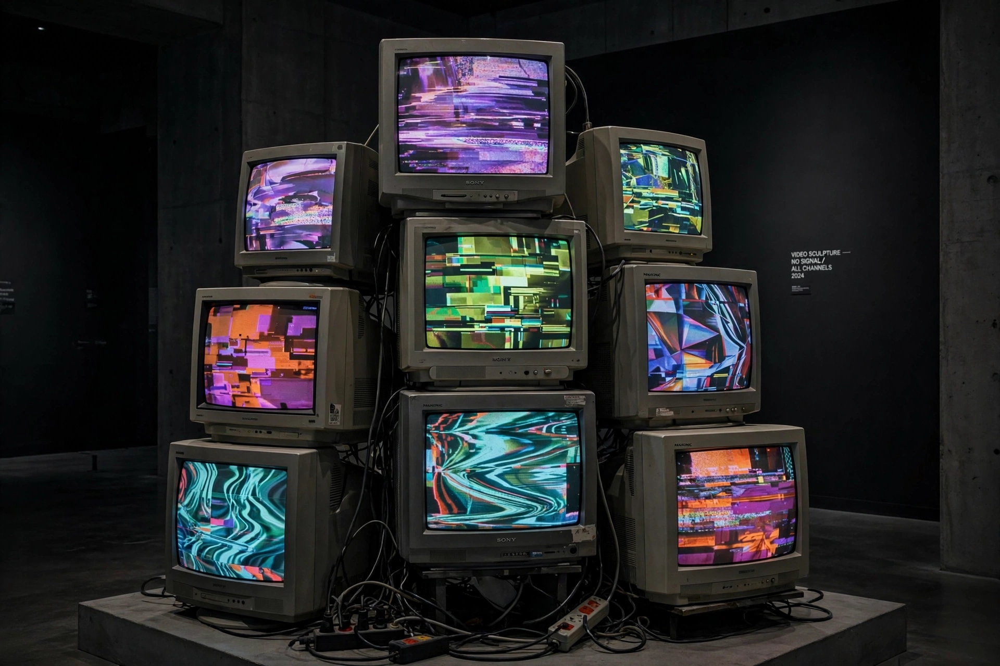

Video art
Video art is an art form which relies on using video technology as a visual and audio medium. Video art emerged during the late 1960s and early 1970s as new consumer video technology — most importantly portable recording devices such as Sony's Portapak (1967) — became available outside corporate broadcasting. The medium draws on, and often positions itself against, broadcast television and commercial cinema.

| Video art | |
|---|---|
| Medium | Video, television, digital media |
| Emerged | Late 1960s, United States and Germany |
| Key pioneers | Nam June Paik, Wolf Vostell, Joan Jonas, Bill Viola, Bruce Nauman |
| Forms | Single-channel tape, installation, closed-circuit, video sculpture |
History
The Korean-born artist Nam June Paik is widely regarded as the founder of video art. Trained as a composer and associated with the Fluxus movement, Paik exhibited manipulated television sets in Wuppertal, Germany, in 1963, and later produced works such as TV Buddha (1974), in which a statue of the Buddha contemplates its own live image on a monitor. Wolf Vostell had incorporated televisions into his happenings and dé-coll/age works from the late 1950s.
In the 1970s, artists including Joan Jonas, Vito Acconci, Bruce Nauman and Martha Rosler used the camera's real-time feedback to explore performance, the body and the politics of the mass media. Multi-monitor installation became a dominant gallery form in the 1980s and 1990s, while Bill Viola's large-scale, slow-motion projections brought video art to a wide museum audience. The migration from tape to digital file, projection and LED screen in the 2000s blurred the boundary between video art, experimental film and installation.
Distinction from cinema
Unlike cinema, video art historically had no necessary commitment to narrative, actors or theatrical exhibition; it was frequently shown in galleries, often as sculpture or installation, and often made for real-time or looped viewing rather than a fixed running time. Video art may use no dialogue, no plot, and may consist of a single unedited take or pure electronic abstraction generated by synthesizers such as the Paik–Abe video synthesizer.
Notable artists
See also
Recreated from memory as part of the muse-webcrawl project.